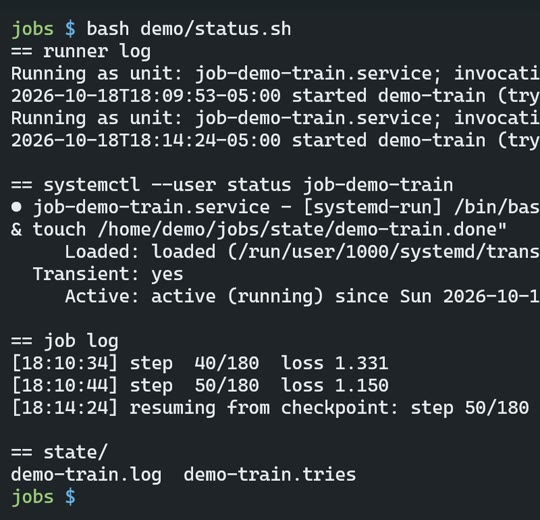

This note is in Spanish, with an English summary below.
Un corte de luz puede dejarte un archivo que existe, pero vacío. Me pasó. Esto es lo que hago ahora.
Qué hace
Cuando se va la luz, la computadora se reinicia y los trabajos largos se mueren. Esto los hace volver solos:
-
Un archivito por trabajo, de dos líneas: dónde corre y qué comando ejecuta.
WORKDIR=/home/demo/jobs/train CMD=python3 train.py -
Un script arranca cada trabajo sin terminar como un servicio del sistema (systemd), lo reintenta hasta 6 veces y, cuando termina bien, deja una marca de listo (
state/<nombre>.done). -
Cron corre ese script al prender la máquina (2 minutos después del arranque) y cada 30 minutos.
-
El trabajo guarda su avance, así que vuelve desde donde se quedó, no desde cero.
-
Escritura atómica: los resultados se escriben en un archivo temporal, se fuerzan al disco (fsync) y recién entonces se renombran. Un corte a la mitad deja el archivo anterior completo, nunca uno vacío.
Medido
Grabación del 2026-10-18 en la demo:
- Corte: apagado en el paso 50 de 180 (18:10:44). El script volvió a arrancar el trabajo y a las 18:14:24 siguió desde el paso 50, sin que nadie tocara nada.
- Escritura atómica: un script que corta la escritura a la mitad. Sin escritura
atómica,
results.jsonquedó con 0 bytes. Con ella, el archivo anterior quedó entero (56 bytes).

Herramientas y costo (precios a oct 2026)
Linux, systemd, cron y Python. $0: todo viene con el sistema.
El código se publica en este GitHub en diciembre, como resume-runner.
Try it
Para probarlo, pega este prompt (en inglés) en Claude Code o Codex, en una carpeta vacía.
El prompt arma una versión pequeña del runner:
- archivos
.jobde dos líneas; - un script que arranca cada trabajo sin terminar como servicio de usuario de systemd, con
hasta 6 intentos y la marca
state/<nombre>.done; - un trabajo de ejemplo que cuenta hasta 30 y guarda su avance con escritura atómica;
- las dos líneas de cron (al arrancar + 2 min, y cada 30 min). El agente te las muestra y no las instala sin preguntarte.
Necesita Linux con systemd y cron (WSL2 con systemd activado sirve) y Python 3. Deja fuera las notificaciones, las dependencias entre trabajos y las colas. Probado el 2026-10-16 con Claude Code 2.1.301: pasó a la primera, en menos de 2 minutos. En la prueba le pedí que no instalara nada. El runner lo probé yo aparte, con trabajos desechables:
- arrancó el trabajo y no lo duplicó;
- tras detenerlo en el paso 7, siguió desde el paso 7;
- dejó la marca de listo;
- un trabajo que siempre falla se rindió a los 6 intentos.
Build a small "resume runner" in this folder so long jobs come back after a reboot or power cut. Needs Linux with systemd user services and cron (WSL2 with systemd enabled works) and Python 3, standard library only. Use absolute paths everywhere, since cron does not start in this folder.
1. Jobs are `jobs/<name>.job` files with two lines: `WORKDIR=/abs/path` and `CMD=command to run`.
2. `runner.py`: for each job without `state/<name>.done`:
- skip it if its systemd user unit `<prefix><name>.service` is active (prefix from env `RR_PREFIX`, default `rr-`);
- if `state/<name>.tries` already says 6, log that it gave up and skip it;
- otherwise add one try and start it with `systemd-run --user` (unit `<prefix><name>`, its WORKDIR, auto-cleanup of finished units) wrapped so exit code 0 creates `state/<name>.done`.
Log one line per action, with a timestamp, to `state/runner.log`.
3. `atomic_write.py` with `atomic_write(path, text)`: temp file in the same folder, flush, os.fsync, os.replace onto the target, then fsync the folder.
4. Example job `jobs/count.job` running `example/count.py`: counts to 30, one step per second, saves its step with atomic_write after each step, and resumes from the saved step when restarted.
5. Cron: show me the two crontab lines, `@reboot sleep 120 && /usr/bin/python3 <abs>/runner.py` and `*/30 * * * * /usr/bin/python3 <abs>/runner.py`, then ASK before installing them. Install nothing in crontab without my yes.
Done when: `python3 runner.py` starts the count job (`systemctl --user status rr-count` shows it running); running it again does not start a second copy; after `systemctl --user stop rr-count`, running it again resumes from the saved step, not from 0; and `state/count.done` appears when it finishes.
Left out on purpose: notifications, job dependencies, queues.
Gotchas
- Un corte de luz dejó un archivo de resultados que existía pero estaba vacío. Por eso la escritura atómica: archivo temporal, fsync, renombrar.
- El script espera 120 s después del arranque, a propósito. Si lo grabas, corta la espera en el video; no la acortes en el crontab.
- Si lo corres en WSL, cerrar todas las ventanas de WSL lo apaga, igual que un corte de luz.
- Los servicios de usuario de systemd solo corren con tu sesión abierta, salvo que actives
loginctl enable-linger <usuario>. Sin eso, después de un reinicio nada arranca hasta que inicias sesión. (Lo señaló Claude Code en la prueba.) - Cada reinicio gasta un intento, también un
systemctl --user stopo un apagón. Un trabajo cortado 6 veces se rinde aunque nunca haya fallado. Para empezar la cuenta de nuevo, borrastate/<nombre>.tries. (Visto en la prueba.)
In English: each long job is a two-line file. A script starts it as a systemd service, retries up to 6 times and leaves a done marker; cron runs the script at boot and every 30 minutes; results are written atomically (temp file, fsync, rename). Measured on a real cut: the job resumed at step 50 of 180 with no input. Without atomic writes, an interrupted write left a 0-byte file. Cost: $0. Code coming in December.
Try it: the prompt above builds a small version: job files, systemd user services, up to 6 tries, a done marker and atomic writes. It shows the cron lines and asks before installing them. Tested 2026-10-16. The gotchas cover WSL, lingering and how retries are counted.